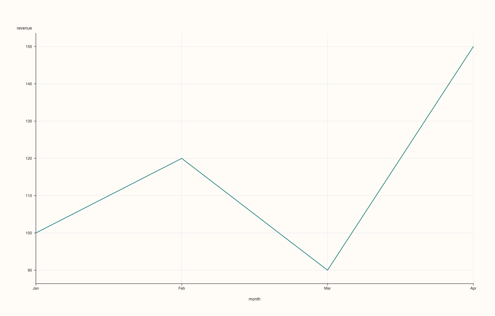
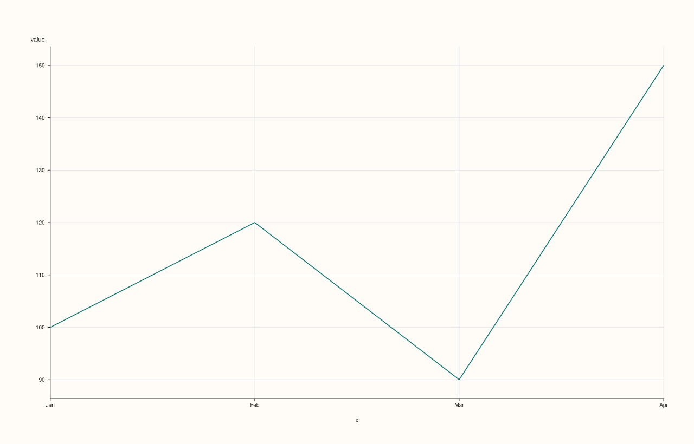
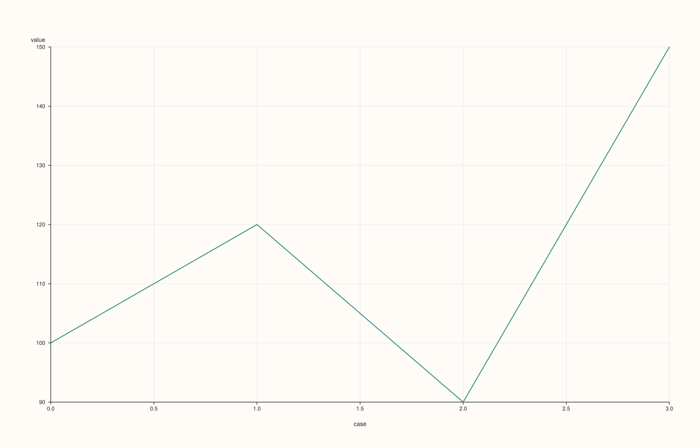
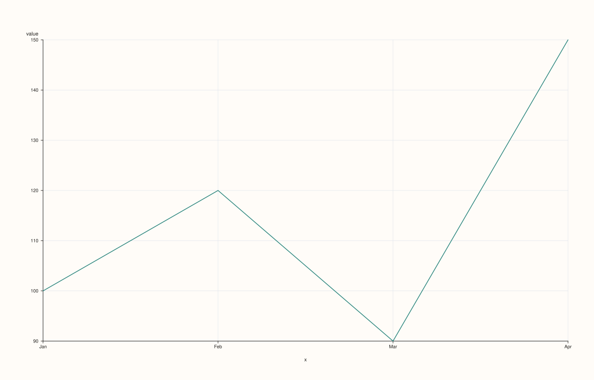

StreamPlotAccessor::line¶
Back to StreamPlotAccessor API Reference
Signatures¶
StreamPlotAccessor::line() const -> pluss::pl::Studio
StreamPlotAccessor::line(const Stream& x) const -> pluss::pl::Studio
StreamPlotAccessor::line(const LinePlotOptions& options) const -> pluss::pl::Studio
StreamPlotAccessor::line(const Stream& x, const LinePlotOptions& options) const -> pluss::pl::Studio
What It Does¶
Draws a single line trace of the bound stream’s own values, against either a plain case
index (no x given) or an explicit companion Stream used as the x-axis. Every overload
is a one-line forward — base_.to_thread().plot(options_).line(...) — into
ThreadPlotAccessor::line, converting the bound stream (and, if
given, x) to Thread first via Stream::to_thread(). See that page for the full
mechanics; this page covers what’s specific to the Stream layer.
Important
Stream has no name() — every chart is column-named “value”/”x”/”hue”
ThreadPlotAccessor::line’s naming rule names the wrapped column after the source
Thread’s own name() if it has one, falling back to "value" (the bound thread) or
"x" (a companion thread) otherwise. Stream::to_thread() never sets a name on the
Thread it produces — Stream has no name()/named() concept at all — so every
StreamPlotAccessor chart’s axis labels are always the generic fallback names: "value"
for the bound stream, "x" for a companion stream (other methods on this accessor use
"hue" for their own second-stream argument). There is no way to get a custom column name
out of a Stream-sourced chart the way a named Thread or a DataFrame feature can.
Important
Row (case) labels are still inherited, via with_label()
Unlike naming, row labels do carry through: Stream::to_thread() copies the bound
stream’s own label (attached via Stream::with_label) onto the
resulting Thread’s row labels. ThreadPlotAccessor::line’s own inheritance rule then
applies — the bound stream’s label wins if present, otherwise a companion x stream’s
label, otherwise a plain case index. See Examples 1 and 2.
Parameters¶
x (const Stream&, optional)
A companion stream used as the x-axis. Must be the same size as the bound stream — a
mismatched size throws "Thread::plot: thread size mismatch" (the message still refers
to Thread, since that’s where the size check actually runs after both streams
convert). Omitted means the x-axis falls back to the bound stream’s own label, or a
plain case index if it has none — see the important callout above.
options (LinePlotOptions)
The identical struct documented on
CatalogPlotAccessor::line (alpha, line_width,
y_limit_method, align) — see that page for each field’s meaning. align is
accepted for shape-compatibility but has no observable effect here: Stream::line()
only ever wraps at most two operands (the bound stream and x) into a Thread-level
call, which has no multi-key alignment step to configure.
Returns¶
pluss::pl::Studio
A figure with one pane containing a single, unlabeled (no-legend) line trace of the
bound stream’s values.
Examples¶
Example 1. No companion stream, and the bound stream has no label of its own: falls back to a plain case index.
using namespace pluss::kindle;
auto revenue = Stream(pluss::make_series({100.0, 120.0, 90.0, 150.0}));
auto chart = revenue.plot().line();
chart.show();
revenue has no label, so the x-axis falls back to a plain 0..3 case index; the y-axis
is labeled "value" — never "revenue", since Stream has no name to draw from.

Example 2. No companion stream, but the bound stream carries its own label — that label becomes the x-axis instead of a bare case index.
using namespace pluss::kindle;
auto labeled_revenue = Stream(pluss::make_series({100.0, 120.0, 90.0, 150.0}))
.with_label(pluss::table::Thread(pluss::make_note({"Q1", "Q2", "Q3", "Q4"})));
auto chart = labeled_revenue.plot().line();
chart.show();

Example 3. An explicit companion stream as the x-axis.
using namespace pluss::kindle;
auto revenue = Stream(pluss::make_series({100.0, 120.0, 90.0, 150.0}));
auto month = Stream(pluss::make_note({"Jan", "Feb", "Mar", "Apr"}));
auto chart = revenue.plot().line(month);
chart.show();
The line is drawn against month’s four categorical positions instead of a case index; the
x-axis is titled "x" (month has no name to contribute either).

Example 4. An explicit LinePlotOptions, tuning opacity and the y-axis fit, with no
companion stream.
using namespace pluss::kindle;
auto revenue = Stream(pluss::make_series({100.0, 120.0, 90.0, 150.0}));
pluss::table::LinePlotOptions options;
options.alpha = 0.85;
options.y_limit_method = pluss::pl::LimitMethod::Tight;
auto chart = revenue.plot().line(options);
chart.show();

Example 5. A companion stream together with explicit options — the four-argument-equivalent overload.
using namespace pluss::kindle;
auto revenue = Stream(pluss::make_series({100.0, 120.0, 90.0, 150.0}));
auto month = Stream(pluss::make_note({"Jan", "Feb", "Mar", "Apr"}));
pluss::table::LinePlotOptions options;
options.alpha = 0.85;
options.y_limit_method = pluss::pl::LimitMethod::Tight;
auto chart = revenue.plot().line(month, options);
chart.show();

Example 6. A mismatched-size companion stream throws.
using namespace pluss::kindle;
auto revenue = Stream(pluss::make_series({100.0, 120.0, 90.0, 150.0}));
auto short_month = Stream(pluss::make_note({"Jan", "Feb", "Mar"}));
try {
auto bad = revenue.plot().line(short_month);
} catch (const std::exception& e) {
std::cout << e.what();
}
Output¶
Thread::plot: thread size mismatch
Notes¶
Delegates straight to
ThreadPlotAccessor::lineafterStream::to_thread()— see that page (and, beneath it,DataFramePlotAccessor::line) for the full mechanics.Column naming is always the generic fallback (
"value"/"x") —Streamhas noname()/named()the wayThreaddoes. See the important callout above.Row labels do carry through, via
Stream::with_label()→Stream::to_thread().A mismatched-size companion
xthrows — see Example 6.Returns a
pluss::pl::Studio— seeCatalogPlotAccessor::line’s important callout for how to view or save the result.
See Also¶
ThreadPlotAccessor::line: the method this delegates to.StreamPlotAccessor::bar: the same shape, drawn as bars instead of a connected line.StreamPlotAccessor::scatter: points against a required companion stream, instead of a connected line against an optional one.Stream::plot: how to enter this accessor in the first place.